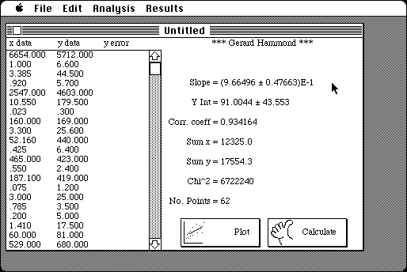

Download
LinearRegPro.zip (86K) Linear Regression Pro v2.2 repackaged into a zipped hfs disk image and checksum file. The disk image can be mounted with Mini vMac.
LinearRegPro.sea.hqx (242K) Linear Regression Pro v2.2 in the original format.
copyright: Gerald Hammond, MacSOS
mod date: Jan 28, 1999
license: shareware
from url :
MacSOS Software
An "application to calculate the slope, intercept, the correlation coefficient and the errors for a series of x, y data. (i.e. y=mx+b)" The "maximum number of points is 40".

If you find these downloads useful, please consider helping the Gryphel Project, which hosts them.
Here are the md5 checksums for the downloads, signed with Gryphel Key 5:
--------- GRY SIGNED TEXT --------- d81aca0d0deba09969e86fcca4120325 LinearRegPro.zip b99fbc4d24baaafdba9a91b8cfd8b0c0 LinearRegPro.sea.hqx ------- BEGIN GRY SIGNATURE ------- Gry/4Xa8CFcUzxdN/CeZVSx0Tu/5wyn8s5Hx/SFQXljeoJMtC7MPBl1yZoNZ/kNF ARj8bxNw8zoayK3aqlBh8w9Zdqi8hKL9LDt6Z1MzyB7FbsdKKOsFgz1qCuiMlk26 kn1ebU8QbAGtEgNlzoTypq1zYh3fJ858QCjO/jgYOPMnWUa8wZeuI811E3WFHkTO -------- END GRY SIGNATURE --------